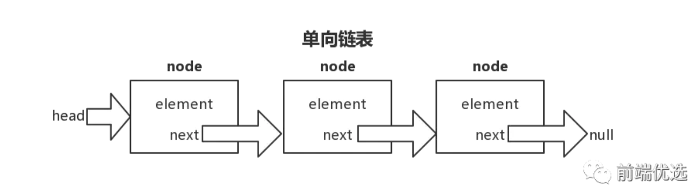
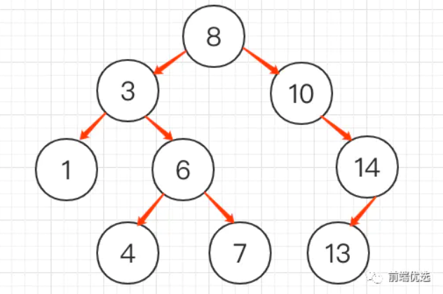

数据结构简介
数据结构和算法对于很多前端工程师来说，一直觉得是可有可无的，但其实不然，个人觉得，前端工程师其实是最需要重视数据结构和算法的人，因为前端所做的东西是用户访问网站第一眼看到的东西，特别在移动浪潮到来之后，对用户体验越来越高，对前端提出了更高的要求，面对越来越复杂的产品，需要坚实的数据结构和算法基础才能驾驭。 如果没有学习过计算机科学的程序员，当我们在处理一些问题时，比较熟悉的数据结构就是数组，数组无疑是一个很好的选择。但很多时候，对于很多复杂的问题，数组就显得太过简陋了，当学习了数据结构和算法之后，对于很多编程问题，当想到一个合适的数据结构后，设计和实现解决这些问题的算法就手到擒来。
其实数据结构我们在大学大一的时候，学习C语言的时候都会有学习到，唉，可惜我那会尼玛被忽悠去该死的学生会了，万万没想到，工作之后 还是做技术，搞得我天天补课学习，我太难了
数据结构基础
-
数据结构：列表、栈、队列、链表、字典、散列、图和二叉查找树
-
排序算法：冒泡排序、选择排序、插入排序、希尔排序、归并排序和快速排序
主要：其中红红的都是稳定排序哦，剩下的都是不稳定
常见的排序算法之中，插入排序、合并排序、冒泡排序等都是稳定的，堆排序、快速排序等是不稳定的。不稳定排序的主要缺点是，多重排序时可能会产生问题。假设有一个姓和名的列表，要求按照“姓氏为主要关键字，名字为次要关键字”进行排序。开发者可能会先按名字排序，再按姓氏进行排序。 如果排序算法是稳定的，这样就可以达到“先姓氏，后名字”的排序效果。如果是不稳定的，就不行。
-
查找算法：顺序查找和二分查找
数据结构
列表
在日常生活中，人们经常使用列表：待办事项列表、购物清单、最佳十名榜单等等。而计算机程序也在使用列表，在下面的条件下，选择列表作为数据结构就显得尤为有用：
-
数据结构较为简单
-
不需要在一个长序列中查找元素，或者对其进行排序
反之，如果数据结构非常复杂，列表的作用就没有那么大了。
这里列表我就不做详细的讲解了，因为我看了半天的书，感觉列表的类型定义和思想，在前端可能都有更好的方法实现
如果后期开发的时候，发现了列表的作用，我就重新讲解回来
队列
使用情况：就像排队，满足先进先出，后进后出的情况，队列有限考虑

给看个例子
前面我们提到过，经常用队列模拟排队的人。下面我们使用队列来模拟跳方块舞的人。当 男男女女来到舞池，他们按照自己的性别排成两队。当舞池中有地方空出来时，选两个队 列中的第一个人组成舞伴。他们身后的人各自向前移动一位，变成新的队首。当一对舞伴 迈入舞池时，主持人会大声喊出他们的名字。 当一对舞伴走出舞池，且两排队伍中有任意 一队没人时，主持人也会把这个情况告诉大家。
//队列 这里用的是es6class方式哦，这个在react中是使用对多最广泛的es6设置
//其实对于class，我的理解就是，可以作为一个函数使用的呢
class Queue {
//下面方法包括了队列的思想
constructor() {
this.state = {
arrAy: []
}
}
//进入队列
enqueue(element) {
this.state.arrAy.push(element)
};
//走出队列
denqueue() {
return this.state.arrAy.shift();
};
//读取队列开头以及队列结尾
front() {
return this.state.arrAy[0]
};
back() {
return this.state.arrAy[this.state.arrAy.length - 1];
};
//返回所有的队列元素
toString() {
let retStr = '';
this.state.arrAy.forEach(index => {
retStr += index + '\n'
});
return retStr
}
//判断数组队列是否为0
empty() {
if (this.state.arrAy.length === 0) {
return true
} else {
return false
}
}
}
//执行队列案例
startstructure: function () {
ajax({
url: './infotation/dancer.txt',
type: 'get',
success: function (response, xml) {
let maleDancers = new Queue();
let femaleDancers = new Queue();
document.getElementById('myDiv').innerText = response;
let array = response.split('\n');
//对男女进行分组
array.forEach(ctn => {
if (ctn) {
if (ctn.split(' ')[0] === '男') {
maleDancers.enqueue(ctn);
} else {
femaleDancers.enqueue(ctn);
}
}
});
let showCtn = '以下是男女分配结果；' + '\n';
while (!femaleDancers.empty()) {
showCtn += maleDancers.denqueue() + '分配的搭档是：' +
femaleDancers.denqueue() + '\n';
}
showCtn += '以下是未分配到的等待人员' + '\n';
if (!maleDancers.empty()) showCtn += maleDancers.toString();
if (!femaleDancers.empty()) showCtn += femaleDancers.toString();
document.getElementById('anwarse').innerText = showCtn;
},
fail: function (status) {
}
});
}
栈
栈是一种特殊的列表，像拿起堆放的柴火一样，栈就是先进后出，先进后出，满足这种情况，就需要考虑栈

给看个例子
回文，就是左右读都一样的，比如：你大爷爷大你，rer，sosos，这个，可以通过栈去判断
//栈
class Stack {
constructor() {
this.arr = [];
this.top = 0;
}
//入栈
push(element) {
this.arr[this.top++] = element;
}
//出栈
//返回栈顶元素，同时将变量 top 的值减 1：
//这个相当于是把数组如果从最顶上的栈顶向下返回一直到底部
pop() {
return this.arr[--this.top];
}
//返回数组的第 top-1 个位置的元素，即栈顶元素
peek() {
return this.arr[this.top - 1]
}
//栈直接清零
clear() {
this.top = 0
}
//栈的个数
length() {
return this.top;
}
}
let checkWord = function () {
let getWprldone = 'hello';
let getWorldTow = 'racecar';
document.getElementById('huiwen1').innerText = getWprldone + '是否是回文' + checkSureWord(getWprldone);
document.getElementById('huiwen2').innerText = getWorldTow + '是否是回文' + checkSureWord(getWorldTow);
};
let checkSureWord = function (world) {
let s = new Stack();
//后期数据不断压入栈低
for (let i = 0; i < world.length; i++) {
s.push(world[i]);
}
//获取回值
let rword = '';
while (s.length() > 0) {
rword += s.pop();
}
if (world === rword) {
return true;
} else {
return false;
}
};
链表
(尼玛这个有点难度，没完全吃透，后面找时间或者案例再重现研究一波)链表，我对这个的学习的定义就是：在js中，数组的作用，链表基本上都可以代替，但是，链表的好处在于， 在js中，使用数组的执行效率会比较慢，如果是需要进行优化，那么可以考虑使用链表
链表几乎可以用在任何可以使用一维数组的情况中。如果需要随机访问，数组仍然是更好的选择。
链表是由一组节点组成的集合。每个节点都使用一个对象的引用指向它的后继。指向另一个节点的引用叫做链。 链表的尾元素指向一个 null 节点
集合
集合（set）是一种包含不同元素的数据结构，集合的总要属性如下
- 集合中的成员是无序的
- 集合中不允许相同成员存在，相当于是里面的数据都是不同的
在es6里面，有提供set的方式，这里在es6里面我也会具体介绍一波，这里我也还是再讲解一下，原生方式下的实现
- 并集：将两个集合中的成员进行合并，得到一个新集合
- 交集：两个集合中共同存在的成员组成一个新的集合
- 补集：属于一个集合而不属于另一个集合的成员组成的集合
class Set {
constructor() {
this.dataStore = [];
}
//集合添加
add(data) {
//集合不能包括相同的，所以必须判断是否有出现过
if (this.dataStore.indexOf(data) < 0) {
this.dataStore.push(data);
return true
} else {
return false
}
}
//集合删除
remove(data) {
let pop = this.dataStore.indexOf(data);
if (pop > -1) {
this.dataStore.splice(pop, 1);
return true
} else {
return false
}
}
//返回集合数据
show() {
return this.dataStore;
}
//检查成员是否属于集合
contains(data) {
if (this.dataStore.indexOf(data) > -1) {
return true
} else {
return false
}
}
//并集
/*
* 思路：两个集合去并集，也就是说，一样的和不一样的全部放到一起，一样的给去掉
* 1、临时集合存放其中一个
* 2、临时集合判断合并的集合是否有一样的，如果不一样，就加进来
* */
union(set) {
let tempSet = new Set(); //递归函数，递归函数就是在方法中使用到了自己
for (let i = 0; i < this.dataStore.length; i++) {
tempSet.add(this.dataStore[i])
}
for (let i = 0; i < set.dataStore.length; i++) {
if (!tempSet.contains(set.dataStore[i])) {
tempSet.dataStore.push(set.dataStore[i]);
}
}
return tempSet;
}
//交集
intersect(set) {
let tempSet = new Set();
for(let i = 0; i < this.dataStore.length; i++) {
if (tempSet.contains(set)) {
tempSet.add(this.dataStore[i]);
}
}
}
//补集
difference(set) {
let temSet = new Set();
for(let i = 0; i < this.dataStore.length; i++) {
if (!set.contains(this.dataStore[i])) {
temSet.add(this.dataStore[i])
}
}
return temSet
}
}
树
叫做“树”是因为它看起来像一棵倒挂的树，也就是说它是根朝上，而叶朝下的。
二叉树: 树中的节点最多只能有两个子节点
目前在前端使用最多考察的最多的树就是 二叉树
二叉查找树:二叉查找树是一种 特殊的二叉树
若左子树不空，则左子树上所有节点的值均小于它的根节点的值
若右子树不空，则右子树上所有节点的值均大于它的根节点的值
//树的节点
class NodeTree {
constructor(data, left, right) {
this.data = data;
this.left = left; //左树
this.right = right; //右树
}
show() {
return this.data
}
}
//二叉查找树
class BST {
constructor() {
this.root = null
}
/*
* 添加节点以及对应思想
* 1、检查是否有根节点，如果没有，那么这个新加的就是新加上的节点
* 2、如果有根节点，那么,就要根据左右两边都要小于原则，进行下一步操作
* 3、这里添加的时候你会发现，当添加了第一个数据之后，后续的数据是根据判断，小
* 的数据给放到左边节点，大于的数据给放到右边节点
* */
insert(data) {
let n = new NodeTree(data, null, null);
//次检查 BST 是否有根节点，如果没有，那么这是棵新树
if (this.root === null) {
this.root = n
} else {
let current = this.root;
let parent;
//while true：里面必须有break跳出，不然会一直循环下去
while (true) {
parent = current;
if (data < current.data) {
current = current.left;
if (current === null) {
parent.left = n;
break;
}
} else {
current = current.right;
if (current === null) {
parent.right = n;
break;
}
}
}
}
}
/*
* 遍历二叉查找树
*中序遍历：中序遍历按照节点上的键值，以升序访问 BST 上的所有节点。
* */
inOrder(node) {
if (!(node === null)) {
this.inOrder(node.left);
console.log(node.show());
this.inOrder(node.right);
}
}
//获取最小值：直接查询左边接节点
getMin() {
let current = this.root;
while (!(current.left === null)) {
current = current.left
}
return current.data;
}
//获取最大值
getMax() {
let current = this.root;
while (!(current.right === null)) {
current = current.right;
}
return current.data;
}
/*
* 查找给定值
* 思路：通过给定值判断大小，确定左边树还是右边，再确定是需要遍历左边还是右边
* */
find(data) {
let current = this.root;
while (current !== null) {
if (data === current.data) {
return current
} else if (data < current.data) {
current = current.left;
} else {
current = current.right;
}
}
return current
}
}
冒泡排序例子
它是最慢的排序算法之一，但也是一种最容易实现的排 序算法
比如，需求是讲数组由小到大排列：[3,44,38,5,47,15,36,26,27,2,46,4,19,50,48,48]
冒泡排序，这个大一就学过，冒泡排序是一种简单的排序算法。它重复地走访过要排序的数列，一次比较两个元素，如果它们的顺序错误就把它们交换过来。走访数列的工作是重复地进行直到没有再需要交换，也就是说该数列已经排序完成。、 这个算法的名字由来是因为越小的元素会经由交换慢慢“浮”到数列的顶端。

那么说通俗一下，冒泡就是第一个和下一个比较，一直比到最后一个，大于的向后，小的向前，排一轮后，再重复又从第一个开始比较
得出结论：
//执行冒泡排序
BubbleSort: function () {
let number = [3,44,38,5,47,15,36,26,27,2,46,4,19,50,48,48];
document.getElementById('BubbleCtn').innerText = (this.BubbleFun(number)).toString();
},
BubbleFun: function (arrAy) {
let ax = arrAy.length;
while (ax > 0) {
let pos = 0;
for (let j = 0; j < ax; j ++) {
if (arrAy[j] > arrAy[j + 1]) {
pos = j;
//这里相当于是冒泡的数据交换
let temp = arrAy[j];
arrAy[j] = arrAy[j + 1];
arrAy[j + 1] = temp;
}
}
//这里的用意在于获取到最后一次比较的索引所在，然后数组以这里为终点开始比较即可
ax = pos;
}
return arrAy;
}
//这里的做法非常巧妙，是通过while循环数组，然后通过冒泡排序不断获取到最后一个最大的位数位数，然后再通过while循环
这里，你也可以使用es6的方式实现Array.prototype.sort()
es6中明确规定，该排序方法必须稳定
得出结论：
esSort: function (arrAy) {
//鉴别条件
const numberSorting = (s1, s2) => {
if ( s1 < s2) return -1;
return 1
};
//es6的sort方法，sort中附带排序条件
return arrAy.sort(numberSorting);
}
所以es6还是很不错的吧，在数据结构之后，es6应该作为重点学习
选择排序
选择排序(Selection-sort)是一种简单直观的排序算法。它的工作原理：首先在未排序序列中找到最小（大）元素，存放到排序序列的起始位置，然后，再从剩余未排序元素中继续寻找最小（大）元素， 然后放到已排序序列的末尾。以此类推，直到所有元素均排序完毕。

根据上面数组的最后输出结果：
插入排序例子
理解：比较简单，就是讲第二个数据向前比较，如果满足大于或者小于，就插入，然后后面第三个继续向前比较，然后第四个....，以此类推

插入排序结果：